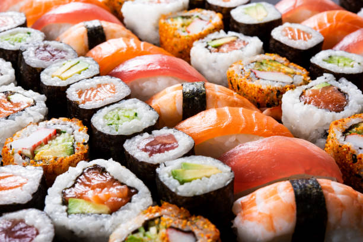

Double Chocolate Cookies
Origin: Michigan Source: Family Recipe Category: Dessert
My daughter learned to make these cookies at a baking camp at Zingermanns and has tweaked the recipe to fit the taste buds of her siblings. They are extremely sugary so the salt helps to balance it. Note, these cookies are best eaten very quickly.
Recipe Ingredients
- Unsalted butter
- Granulated Sugar
- Packed light or dark brown sugar
- Large egg
- Pure vanilla extract
- Semi-sweet chocolate chunks (melted)
- All-purpose flour
- Natural unsweetened cocoa powder
- Baking soda
- Salt
- Semi-sweet chocolate chunks
Recipe Steps
- In a mixing bowl cream together the butter, granulated sugar, and brown sugar
- Add the egg and vanilla extract and beat well
- Add the melted chocolate
- In a separate bowl combine the flour, baking soda, cocoa powder and salt
- Combine the wet and dry ingredients
- Add the unmelted chocolate chunks.
- Form 15 cookies and place on a baking sheet.
- Cook for 12 to 13 minutes at 350 degrees.
Additional Food images


Spicy Hotpot
Origin: Sichuan, China Source: Family Recipe Category: Main Course
Spicy Hotpot, also known as Sichuan Hotpot, is a popular Chinese dish that's perfect for gatherings. It's known for its numbing and spicy flavors.
Recipe Ingredients
- Chicken or Beef Broth
- Sichuan Peppercorns
- Red Chili Peppers
- Thinly Sliced Beef or Chicken
- Tofu
- Mushrooms
- Napa Cabbage
- Sweet Potato Noodles
- Soy Sauce
- Sesame Oil
- Chopped Green Onions
Recipe Steps
- Prepare the broth by simmering chicken or beef bones with Sichuan peppercorns and red chili peppers.
- Slice the meat thinly and set aside.
- Cut tofu into cubes and prepare mushrooms, Napa cabbage, and sweet potato noodles.
- Once the broth is ready, strain it to remove solids and return it to the pot.
- Place a hotpot on the dining table and add the prepared ingredients.
- As the broth simmers in the hotpot, everyone can add their choice of ingredients to cook.
- Enjoy dipping the cooked ingredients in a mixture of soy sauce, sesame oil, and chopped green onions.
Additional Food images

Sushi
Origin: Japan Source: Family Recipe Category: Japanese Cuisine Sushi is a classic and beloved Japanese dish known for its simplicity and exquisite flavors.
Recipe Ingredients
- Sushi Rice
- Fresh Fish (e.g., Tuna, Salmon)
- Seaweed
- Wasabi
Recipe Steps
- Cook sushi rice according to package instructions and let it cool.
- Cut the fresh fish into thin slices.
- Place a sheet of seaweed (nori) on a bamboo sushi rolling mat.
- Spread a layer of sushi rice over the nori, leaving a small border at the top.
- Add slices of fresh fish and a dab of wasabi on top of the rice.
- Roll the sushi using the bamboo mat, applying gentle pressure to shape it.
- Using a sharp knife, slice the sushi roll into bite-sized pieces.
Additional Food images